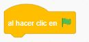
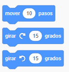

El bloque de movimiento tiene instrucciones relativas al movimiento de los objetos, por lo que nos permiten que los personajes se muevan por la escena. Vamos a estudiar qué tipos de movimientos admite Scratch y la mejor manera de saberlo es probando directamente con el programa. Así que crea un archivo nuevo en Scratch e inserta la pieza de hacer clic en la bandera verde ():
- Mover y girar
Como puedes ver en la imagen, tenemos tres instrucciones posibles: mover ... pasos y girar ... grados.

Selecciona la primera instrucción (mover 10 pasos) y únela con la pieza de la bandera. Prueba el programa, ¿qué hace?
- ¿Qué ocurre si en lugar de poner 10 pasos pones 100?
- ¿Podrías poner un valor negativo?